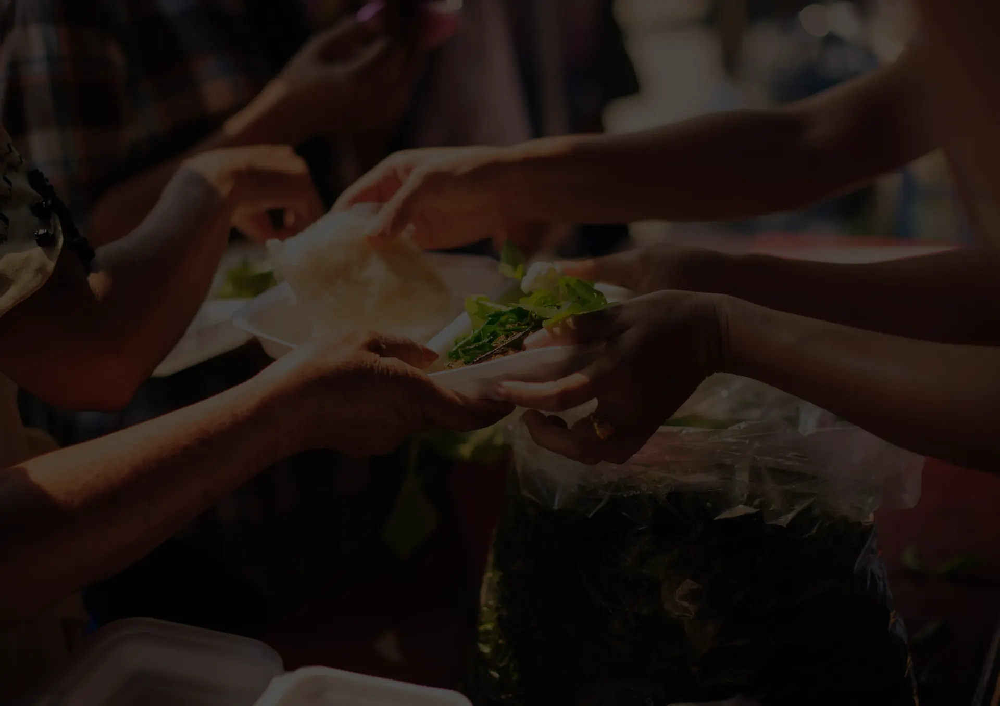
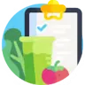
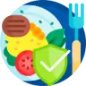
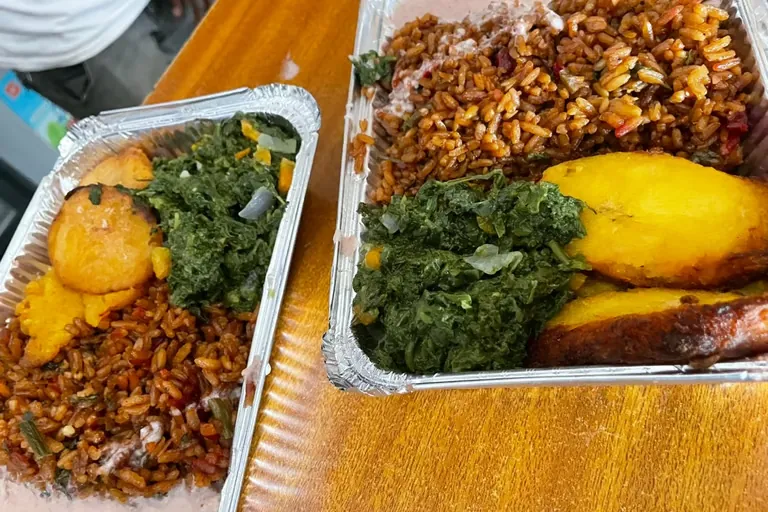

BibimBite
Nourishing Communities, One Bowl at a Time
Empowering Single Mothers in Rwanda: Bibimbite's Virtual Presentation Kickoff


In a motivating virtual session held recently 22/Dec/2025, Bibimbite founder Seungwoo Oh presented the project's vision and training roadmap directly to our single mother participants. This focused online meeting was designed to inspire and prepare them for success in launching their own food businesses.
Attending were the aspiring single mother entrepreneurs (our program "students"), the president of the Rwanda Single Mothers Organization (RSMO)—our vital implementing partner—Seungwoo Oh as founder, presenter, and project lead, project mentor Emmah Shyaka from Youth Impact, and Jae Jin Lim, CEO of Youth Impact.
Read the full storyOur Goal
At BibimBite, we believe that everyone deserves access to nutritious, balanced meals, no matter where they live. Our goals go beyond simply providing food; we're building a sustainable foundation for long-term health, equity, and community empowerment.
What We Do

Bridge the Nutrition Gap
We aim to make nutrient-rich, affordable meals accessible in communities where healthy food options are limited. By offering balanced dishes inspired by bibimbap, we strive to ensure that no one is left behind nutritionally.
Empower Communities
True change begins within the community. We collaborate with local partners, farmers, and organizations to strengthen local food systems and create opportunities for education, employment, and self-sufficiency.

Promote Health Equity
We work to reduce health disparities by providing consistent access to essential nutrients, supporting better diets, and improving overall well-being in underserved populations.
Inspire Sustainable Eating
Through BibimBite's philosophy of balance and harmony, we encourage people to embrace mindful, sustainable eating habits that respect both the body and the planet.

Bringing Nutrition to Food Deserts
BibimBite tackles food insecurity by operating a mobile bibimbap food truck that brings affordable, nutritious meals directly to underserved communities. With its vibrant mix of vegetables, lean proteins, and grains, the food truck promotes healthier eating habits and cultural inclusivity.
Explore our menuTestimonials
“Before BibimBite came to our community, getting a healthy meal during the day was difficult. Now I can eat something delicious and nutritious that keeps me full and energized.”
“My children love the food, and I love that it's balanced with vegetables and grains. It's helped us eat better without spending too much.”